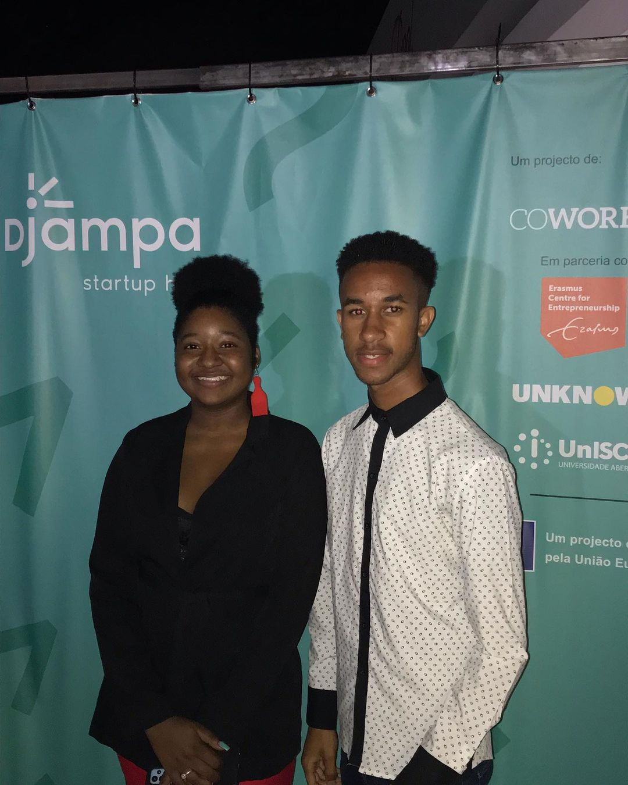

04 de Outubro de 2022
Robotics, Makers and Internet of Things

Robotics, Makers and Internet of Things, foi o tema de conversa no último Networking Event da Cowork Lab, que contou com a presença de inúmeros participantes e um painel rico em conteúdo que compartilhou seus conhecimentos e experiências sobre o tema.